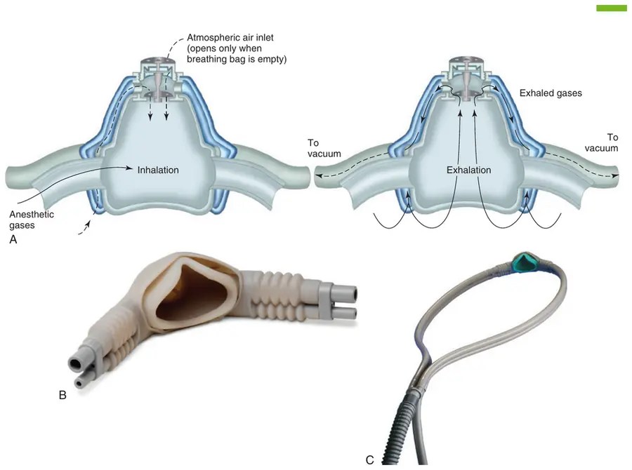
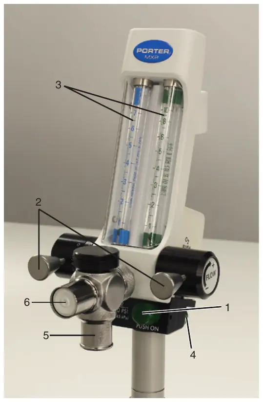

نسخه استخراجشده؛ ترجمه یا تأیید علمی انجام نشده است. وضعیت: captured
سداسیون با استنشاق نیتروس اکساید اغلب تکنیک انتخابی برای بیمار مضطرب است، و ممکن است تنها تکنیک لازم برای بسیاری از بیماران با اضطراب خفیف تا متوسط باشد. نیتروس اکساید وقتی درست به کار رود، حاشیهی ایمنی بهطور قابلتوجهی خوبی دارد.

گازی است بیبو و بیرنگ که راه هوایی را تحریک نمیکند. در غلظتهای بسیار بالا برای انسان سمی است، ولی وقتی درست با اکسیژن خالص مخلوط و مناسب داده شود، میتواند یک ضددرد و ضداضطراب بسیار قوی باشد — و همین آن را برای جراحی دهان و برای بیمارانی که در درجهی اول از تزریق بیحسی میترسند مفید میکند.
و حالا یک نکتهی مانومتری که خواندن اشتباهش میتواند وسط کار غافلگیرت کند:
پیامد عملی: عدد ۷۵۰ روی مانومتر N₂O به تو هیچ نمیگوید که چقدر گاز مانده. وقتی عدد شروع به افتادن کرد، یعنی تقریباً تمام شده.
پیش از هر چیز: تطابق درست ماسک با صورت بیمار را بررسی کن و چند دقیقه به بیمار فرصت بده تا به ماسک عادت کند و بتواند تحملش کند. سپس چند دقیقه پیشاکسیژناسیون.

و حالا پروتکل تیتراسیون — همهی گامها دو دقیقهایاند:
و معیار پایان تیتراسیون: تا زمانی ادامه بده که بیمار احساس آرامش کند و از تجربه لذت ببرد.
و دو سقف ایمنی صریح: بهطور کلی از سطوح بالای ۵۰٪ N₂O باید پرهیز شود، و وقتی سطوح بالای ۴۰٪ در استفاده است، حالوهوای بیمار را زیر نظر بگیر، چون در برخی شرایط بیماران ممکن است ناگهان دچار عدم جهتیابی یا حتی پرخاشگری شوند.
و یک هشدار عملی دربارهی بیماران خاص: برخی بیماران که تجربهی منظم حالتهای تغییریافتهی ذهنی دارند ممکن است دوزهای بالاتری بخواهند — ولی پیش از بالا بردن دوز، مطمئن شو ماسک درست جا افتاده و بیمار از راه بینی نفس میکشد.